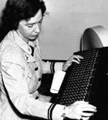

Mark I
Grace Hopper was born in 1906. Her parents, noticing her interest in math, made special arrangements for her to take classes reserved for boys in school. She received a Bachelors degree in Mathematics and physics from Vassar college and then moved on to Yale,, where she did her Masters degree in Math. She continued her education and began a teaching career at Vassar. When she received her PhD, she joined the navy where she was assigned to work in the Bureau of Ordinance computation project at Harvard University. There, she became part of the programming team that worked on the Mark I, the first computer ever made.